ЕГЭ Математика — Задания 3-12
Задач отображено: 206
- 1.6 Острый угол $B$ прямоугольного треугольника $ABC$ равен $65^\circ$. Найдите величину угла между высотой $CH$ и медианой $CM$, проведёнными из вершины прямого угла $C$. Ответ дайте в градусах.
- 1.7 Острый угол $B$ прямоугольного треугольника $ABC$ равен $21^\circ$. Найдите величину угла между биссектрисой $CD$ и медианой $CM$, проведёнными из вершины прямого угла $C$. Ответ дайте в градусах.
- 1.8 Острый угол $B$ прямоугольного треугольника $ABC$ равен $25^\circ$. Найдите величину угла между высотой $CH$ и биссектрисой $CD$, проведёнными из вершины прямого угла $C$. Ответ дайте в градусах.
- 1.9 Две стороны треугольника равны $15$ и $18$. Высота, опущенная на большую из этих сторон, равна $10$. Найдите длину высоты, опущенной на меньшую из этих сторон треугольника.
- 1.10 В треугольнике $ABC$ стороны $AC$ и $BC$ равны. Внешний угол при вершине $B$ равен $107^\circ$. Найдите угол $C$. Ответ дайте в градусах.
- 1.11 В треугольнике $ABC$ сторона $AB$ равна $3\sqrt{2}$, угол $C$ равен $135^\circ$. Найдите радиус описанной около этого треугольника окружности.
- 1.12 Площадь параллелограмма $ABCD$ равна $24$. Точка $E$ — середина стороны $AD$. Найдите площадь трапеции $BCDE$.
- 1.13 Площадь параллелограмма $ABCD$ равна $60$. Точка $E$ — середина стороны $AD$. Найдите площадь треугольника $ABE$.
- 1.14 Стороны параллелограмма равны $18$ и $20$. Высота, опущенная на меньшую из этих сторон, равна $10$. Найдите длину высоты, опущенной на большую сторону параллелограмма.
- 1.15 Основания трапеции равны $4$ и $10$. Найдите больший из отрезков, на которые делит среднюю линию этой трапеции одна из её диагоналей.
- 1.16 Найдите центральный угол, если он на $28^\circ$ больше острого вписанного угла, опирающегося на ту же дугу. Ответ дайте в градусах.
- 1.17 Центральный угол на $32^\circ$ больше острого вписанного угла, опирающегося на ту же дугу окружности. Найдите вписанный угол. Ответ дайте в градусах.
- 1.18 Отрезки $AC$ и $BD$ — диаметры окружности с центром $O$. Угол $ACB$ равен $41^\circ$. Найдите угол $AOD$. Ответ дайте в градусах.
- 1.19 Отрезки $AC$ и $BD$ — диаметры окружности с центром $O$. Угол $AOD$ равен $16^\circ$. Найдите вписанный угол $ACB$. Ответ дайте в градусах.
- 1.20 Четырёхугольник $ABCD$ вписан в окружность. Угол $ABC$ равен $103^\circ$, угол $CAD$ равен $42^\circ$. Найдите угол $ABD$. Ответ дайте в градусах.
- 1.21 Четырёхугольник $ABCD$ вписан в окружность. Угол $ABD$ равен $61^\circ$, угол $CAD$ равен $37^\circ$. Найдите угол $ABC$. Ответ дайте в градусах.
- 1.22 Четырёхугольник $ABCD$ вписан в окружность. Угол $ABC$ равен $120^\circ$, угол $ABD$ равен $43^\circ$. Найдите угол $CAD$. Ответ дайте в градусах.
- 1.23 Два угла вписанного в окружность четырёхугольника равны $59^\circ$ и $102^\circ$. Найдите больший из оставшихся углов. Ответ дайте в градусах.
- 1.24 Четырёхугольник $ABCD$ вписан в окружность. Угол $BAD$ равен $136^\circ$. Найдите угол $BCD$. Ответ дайте в градусах.
- 1.25 Найдите угол $ACO$, если его сторона $CA$ касается окружности с центром $O$, отрезок $CO$ пересекает окружность в точке $B$, а дуга $AB$ окружности, заключённая внутри этого угла, равна $66^\circ$.
- 1.26 Угол $ACO$ равен $57^\circ$. Его сторона $CA$ касается окружности с центром в точке $O$. Отрезок $CO$ пересекает окружность в точке $B$. Найдите градусную меру дуги $AB$ окружности, заключённой внутри этого угла. Ответ дайте в градусах.
- 1.27 В четырёхугольник $ABCD$ вписана окружность, $AB = 10, CD = 17$. Найдите периметр четырёхугольника $ABCD$.
- 2.1 Даны векторы $\vec{a}(5; 3)$ и $\vec{b}(4; -6)$. Найдите скалярное произведение $\vec{a} \cdot \vec{b}$.
-
2.2
На координатной плоскости изображены векторы $\vec{a}$ и $\vec{b}$, координатами которых являются целые числа. Найдите длину вектора $\vec{a} + 4\vec{b}$.
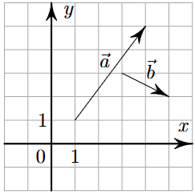
- 2.3 Даны векторы $\vec{a}(31; 0)$ и $\vec{b}(1; -1)$. Найдите длину вектора $\vec{a} - 24\vec{b}$.
- 2.4 Даны векторы $\vec{a}(14; -2)$ и $\vec{b}(5; -8)$. Найдите скалярное произведение $\vec{a} \cdot \vec{b}$.
- 2.5 Даны векторы $\vec{a}(-3; 5)$ и $\vec{b}(1; 13)$. Найдите скалярное произведение $\vec{a} \cdot \vec{b}$.
-
2.6
На координатной плоскости изображены векторы $\vec{a}$ и $\vec{b}$, координатами которых являются целые числа. Найдите скалярное произведение $\vec{a} \cdot \vec{b}$.
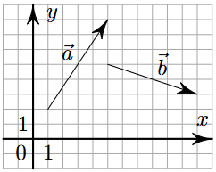
- 2.7 Даны векторы $\vec{a}(2; 0)$ и $\vec{b}(1; 4)$. Найдите длину вектора $\vec{a} + 3\vec{b}$.
-
2.8
На координатной плоскости изображены векторы $\vec{a}$ и $\vec{b}$, координатами которых являются целые числа. Найдите скалярное произведение $\vec{a} \cdot \vec{b}$.
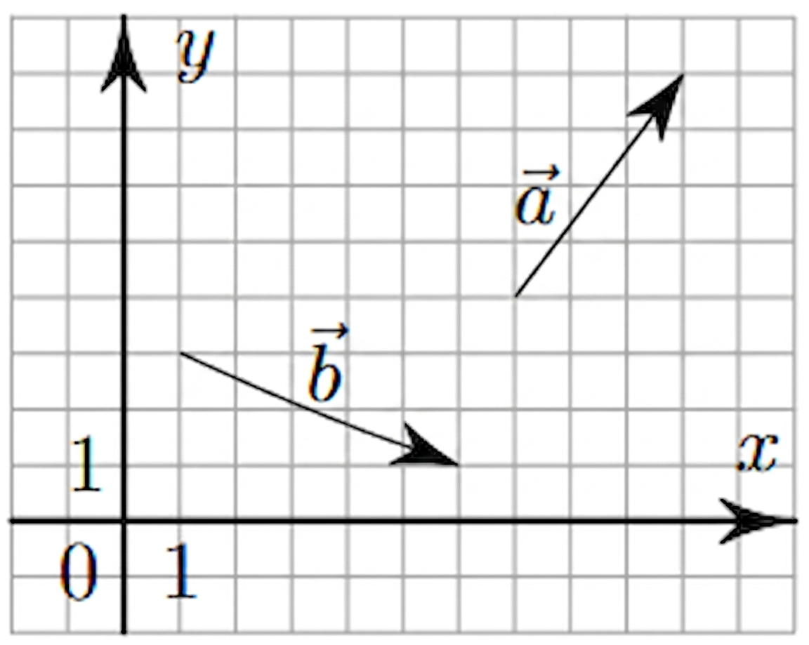
-
2.9
На координатной плоскости изображены векторы $\vec{a}$ и $\vec{b}$, координатами которых являются целые числа. Найдите скалярное произведение $\vec{a} \cdot \vec{b}$.
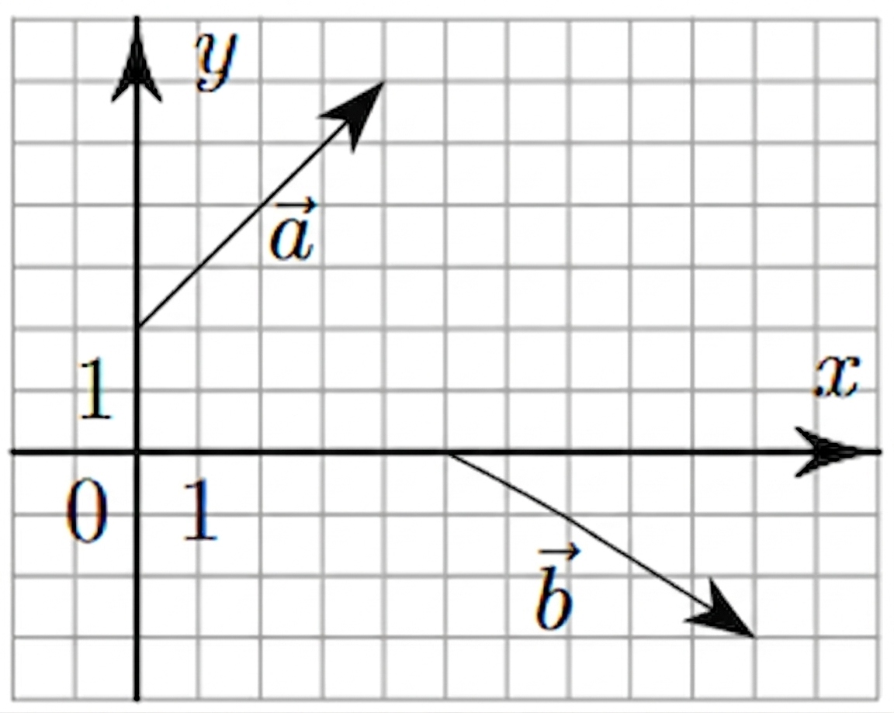
- 2.10 Даны векторы $\vec{a}(5; -7)$ и $\vec{b}(14; 1)$. Найдите скалярное произведение $\vec{a} \cdot \vec{b}$.
- 2.11 Длины векторов $\vec{a}$ и $\vec{b}$ равны 3 и 5, а угол между ними равен 180°C. Найдите скалярное произведение $\vec{a} \cdot \vec{b}$.
- 2.12 Длины векторов $\vec{a}$ и $\vec{b}$ равны 3 и 7, а угол между ними равен 60°. Найдите скалярное произведение $\vec{a} \cdot \vec{b}$.
- 2.13 Даны векторы $\vec{a}(25; 0)$ и $\vec{b}(1; -5)$. Найдите длину вектора $\vec{a} - 4\vec{b}$.
- 2.14 Даны векторы $\vec{a}(-13; 4)$ и $\vec{b}(-6; 1)$. Найдите скалярное произведение $\vec{a} \cdot \vec{b}$.
- 2.15 Даны векторы $\vec{a}(1; 1)$ и $\vec{b}(0; 7)$. Найдите длину вектора $8\vec{a} + \vec{b}$.
- 2.16 Даны векторы $\vec{a}(2; 1)$ и $\vec{b}(2; -4)$. Найдите скалярное произведение векторов $\vec{a} + \vec{b}$ и $7\vec{a} - \vec{b}$.
- 2.17 Даны векторы $\vec{a}(6; 4)$ и $\vec{b}(5; -7)$. Найдите скалярное произведение $\vec{a} \cdot \vec{b}$.
-
3.1
В прямоугольном параллелепипеде $ABCDA_1B_1C_1D_1$ известно, что $AB = 8, BC = 7, AA_1 = 6$. Найдите объём многогранника, вершинами которого являются точки $A, B, C, A_1, B_1, C_1$.
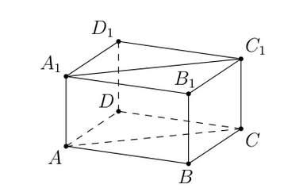
-
3.2
В прямоугольном параллелепипеде $ABCDA_1B_1C_1D_1$ известно, что $AB = 5, BC = 4, AA_1 = 3$. Найдите объём многогранника, вершинами которого являются точки $A, B, C, D, A_1, B_1$.
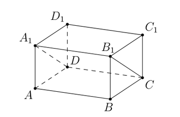
-
3.3
Объём куба равен 80. Найдите объём треугольной призмы, отсекаемой от куба плоскостью, проходящей через середины двух рёбер, выходящих из одной вершины, и параллельной третьему ребру, выходящему из этой же вершины.
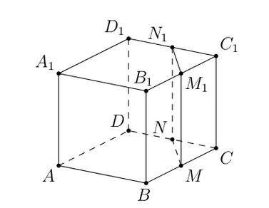
-
3.4
Через среднюю линию основания треугольной призмы проведена плоскость, параллельная боковому ребру. Найдите объём этой призмы, если объём отсечённой треугольной призмы равен 15.
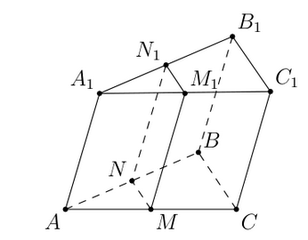
-
3.5
Площадь боковой поверхности треугольной призмы равна 24. Через среднюю линию основания призмы проведена плоскость, параллельная боковому ребру. Найдите площадь боковой поверхности отсечённой треугольной призмы.
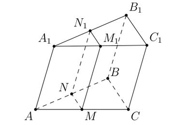
-
3.6
Через среднюю линию основания треугольной призмы проведена плоскость, параллельная боковому ребру. Площадь боковой поверхности отсечённой треугольной призмы равна 36. Найдите площадь боковой поверхности исходной призмы.
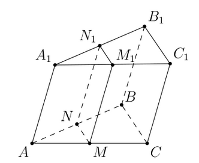
-
3.7
Через среднюю линию основания правильной треугольной призмы, объём которой равен 84, проведена плоскость, параллельная боковому ребру. Найдите объём отсечённой треугольной призмы.
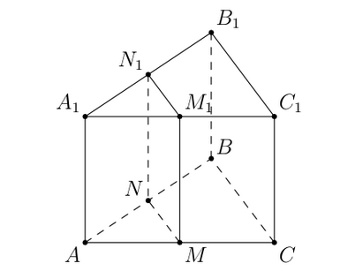
-
3.8
Найдите объём многогранника, вершинами которого являются вершины $A, B, C, C_1$ правильной треугольной призмы $ABCA_1B_1C_1$, площадь основания которой равна 6, а боковое ребро равно 9.
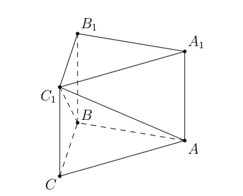
-
3.9
Дана правильная треугольная призма $ABCA_1B_1C_1$, площадь основания которой равна 4, а боковое ребро равно 6. Найдите объём многогранника, вершинами которого являются точки $B, C, A_1, B_1, C_1$.
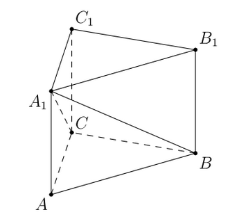
-
3.10
Найдите объём многогранника, вершинами которого являются вершины $A, B, C, D, A_1$ прямоугольного параллелепипеда $ABCDA_1B_1C_1D_1$, у которого $AB = 3, AD = 9, AA_1 = 4$.
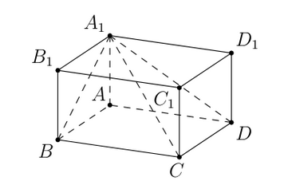
-
3.11
В прямоугольном параллелепипеде $ABCDA_1B_1C_1D_1$ известно, что $AB = 6, BC = 5, AA_1 = 4$. Найдите объём многогранника, вершинами которого являются точки $A, B, C, B_1$.
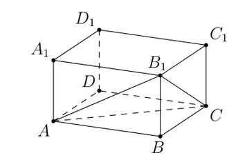
-
3.12
Одна цилиндрическая кружка вдвое выше второй, зато вторая в полтора раза шире. Найдите отношение объёма второй кружки к объёму первой.
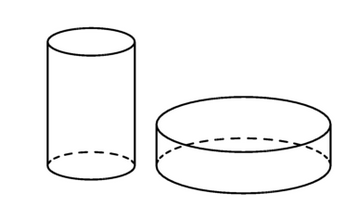
-
3.13
Дано два цилиндра. Объём первого цилиндра равен 15. У второго цилиндра высота в 3 раза меньше, а радиус основания в 2 раза больше, чем у первого. Найдите объём второго цилиндра.
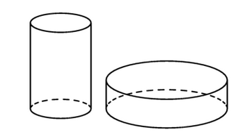
-
3.14
Во сколько раз уменьшится объём конуса, если его высота уменьшится в 9 раз, а радиус основания останется прежним?
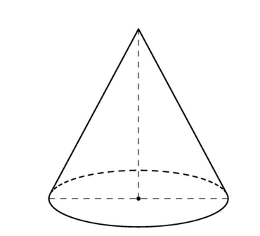
-
3.15
В сосуде, имеющем форму конуса, уровень жидкости достигает $\frac{1}{3}$ высоты. Объём жидкости равен 4 мл. Сколько миллилитров жидкости нужно долить, чтобы полностью наполнить сосуд?
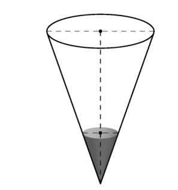
-
3.16
Цилиндр и конус имеют общие основание и высоту. Высота цилиндра равна радиусу основания. Площадь боковой поверхности цилиндра равна $5\sqrt{2}$. Найдите площадь боковой поверхности конуса.
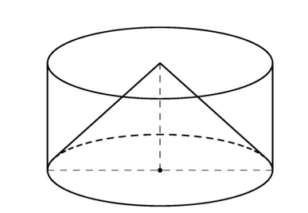
-
3.17
Цилиндр и конус имеют общие основание и высоту. Высота цилиндра равна радиусу основания. Площадь боковой поверхности конуса равна $3\sqrt{2}$. Найдите площадь боковой поверхности цилиндра.
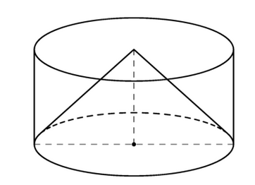
-
3.18
Цилиндр и конус имеют общие основание и высоту. Объём цилиндра равен 30. Найдите объём конуса.
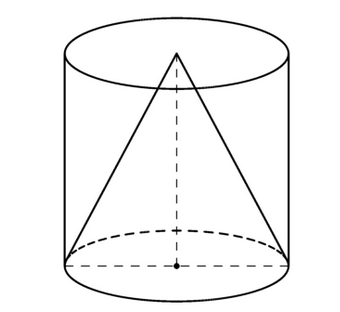
-
3.19
Цилиндр и конус имеют общие основание и высоту. Объём конуса равен 6. Найдите объём цилиндра.
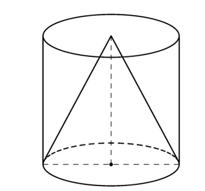
-
3.20
Шар, объём которого равен 18, вписан в цилиндр. Найдите объём цилиндра.

-
3.21
Цилиндр, объём которого равен 18, описан около шара. Найдите объём шара.
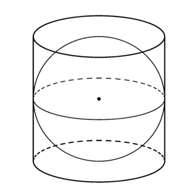
-
3.22
Шар вписан в цилиндр. Площадь полной поверхности цилиндра равна 30. Найдите площадь поверхности шара.

-
3.23
Конус вписан в шар. Радиус основания конуса равен радиусу шара. Объём шара равен 60. Найдите объём конуса.

-
3.24
Конус вписан в шар. Радиус основания конуса равен радиусу шара. Объём конуса равен 12. Найдите объём шара.

-
3.25
Около конуса описана сфера (сфера содержит окружность основания конуса и его вершину). Центр сферы находится в центре основания конуса. Образующая конуса равна $9\sqrt{2}$. Найдите радиус сферы.
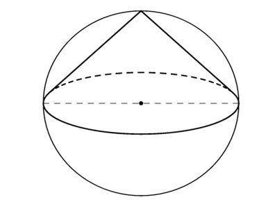
-
3.26
Площадь сечения шара плоскостью, проходящей через центр шара, равна 12. Найдите площадь поверхности шара.
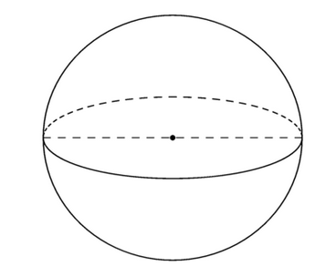
- 4.1 На олимпиаде по математике 550 участников разместили в четырёх аудиториях. В первых трёх удалось разместить по 110 человек, оставшихся перевели в запасную аудиторию в другом корпусе. Найдите вероятность того, что случайно выбранный участник писал олимпиаду в запасной аудитории.
- 4.2 Дима, Марат, Петя, Надя и Света бросили жребий — кому начинать игру. Найдите вероятность того, что начинать игру должен будет мальчик.
- 4.3 На конференцию приехали учёные из трёх стран: 3 из Дании, 4 из Венгрии и 3 из Болгарии. Порядок докладов определяется жеребьёвкой. Найдите вероятность того, что седьмым окажется доклад учёного из Болгарии.
- 4.4 В соревнованиях по толканию ядра участвуют спортсмены из четырёх стран: 4 из Аргентины, 7 из Бразилии, 5 из Парагвая и 4 из Уругвая. Порядок, в котором выступают спортсмены, определяется жребием. Найдите вероятность того, что спортсмен, выступающий первым, окажется из Бразилии.
- 4.5 В среднем из 3000 садовых насосов, поступивших в продажу, 9 подтекают. Найдите вероятность того, что один случайно выбранный для контроля насос не подтекает.
- 4.6 Фабрика выпускает сумки. В среднем 6 сумки из 75 имеют скрытые дефекты. Найдите вероятность того, что купленная сумка окажется без скрытых дефектов.
- 4.7 На чемпионате по прыжкам в воду выступают 25 спортсменов, среди них 10 спортсменов из Испании и 6 спортсменов из Бразилии. Порядок выступлений определяется жеребьёвкой. Найдите вероятность того, что одиннадцатым будет выступать спортсмен из Испании.
- 4.8 В чемпионате по гимнастике участвуют 25 спортсменок: 6 из Венгрии, 9 из Румынии, остальные — из Болгарии. Порядок, в котором выступают спортсменки, определяется жребием. Найдите вероятность того, что спортсменка, выступающая первой, окажется из Болгарии.
- 4.9 Перед началом футбольного матча судья бросает монетку, чтобы определить, какая из команд начнёт игру с мячом. Команда «Биолог» играет три матча с разными командами. Найдите вероятность того, что в этих матчах команда «Биолог» начнёт игру с мячом все три раза.
- 4.10 В случайном эксперименте симметричную монету бросают дважды. Найдите вероятность того, что решка выпадет ровно один раз.
- 4.11 В сборнике билетов по математике всего 48 билетов, в двенадцати из них встречается вопрос по теме «Логарифмы». Найдите вероятность того, что в случайно выбранном на экзамене билете школьнику не достанется вопрос по теме «Логарифмы».
- 4.12 В группе туристов 50 человек. Порядок, в котором вертолёт перевозит туристов по 5 человек за рейс, случаен. Найдите вероятность того, что турист В., входящий в состав группы, полетит первым рейсом вертолёта.
- 4.13 В группе туристов 20 человек. С помощью жребия они выбирают семь человек, которые должны идти в село в магазин за продуктами. Какова вероятность того, что турист Д., входящий в состав группы, пойдёт в магазин?
- 4.14 Вероятность того, что в случайный момент времени температура тела здорового человека окажется ниже чем 36,8°C, равна 0,83. Найдите вероятность того, что в случайный момент времени у здорового человека температура окажется 36,8°C или выше.
- 4.15 Вероятность того, что на тестировании по математике учащийся А. верно решит больше четырёх задач, равна 0,73. Вероятность того, что А. верно решит больше трёх задач, равна 0,86. Найдите вероятность того, что А. верно решит ровно 4 задачи.
- 4.16 Из районного центра в деревню ежедневно ходит автобус. Вероятность того, что в понедельник в автобусе окажется меньше 20 пассажиров, равна 0,94. Вероятность того, что окажется меньше 15 пассажиров, равна 0,56. Найдите вероятность того, что число пассажиров будет от 15 до 19 включительно.
- 5.1 Помещение освещается тремя лампами. Вероятность перегорания каждой лампы в течение года равна 0,7. Лампы перегорают независимо друг от друга. Найдите вероятность того, что в течение года хотя бы одна лампа не перегорит.
- 5.2 Стрелок стреляет по одному разу в каждую из четырёх мишеней. Вероятность попадания в мишень при каждом отдельном выстреле равна 0,7. Найдите вероятность того, что стрелок попадёт в две первые мишени и не попадёт в две последние.
- 5.3 Стрелок в тире стреляет по мишени до тех пор, пока не поразит её. Известно, что он попадает в цель с вероятностью 0,5 при каждом отдельном выстреле. Какое наименьшее количество патронов нужно дать стрелку, чтобы он поразил цель с вероятностью не меньше 0,7?
- 5.4 Игральную кость бросили два раза. Известно, что шесть очков не выпало ни разу. Найдите при этом условии вероятность события «сумма очков равна 8».
- 5.5 Вероятность того, что в понедельник в автобусе окажется меньше 23 пассажиров, равна 0,87. Вероятность того, что окажется меньше 14 пассажиров, равна 0,61. Найдите вероятность того, что число пассажиров будет от 14 до 22 включительно.
- 5.6 При выпечке хлеба производится контрольное взвешивание свежей буханки. Вероятность того, что масса окажется меньше 810 г, равна 0,95. Вероятность того, что масса окажется больше 790 г, равна 0,84. Найдите вероятность того, что масса буханки больше 790 г, но меньше 810 г.
- 5.7 В коробке 5 синих, 9 красных и 11 зелёных фломастеров. Случайным образом выбирают два фломастера. Найдите вероятность того, что окажутся выбраны один синий и один красный фломастеры.
- 5.8 В торговом центре два одинаковых автомата продают кофе. Вероятность того, что к концу дня в первом автомате закончится кофе, равна 0,2. Вероятность того, что кофе закончится в двух автоматах, равна 0,18. Найдите вероятность того, что к концу дня кофе останется в двух автоматах.
- 5.9 Автоматическая линия изготавливает батарейки. Вероятность неисправности равна 0,01. Система забракует неисправную батарейку с вероятностью 0,96, а исправную по ошибке — с вероятностью 0,06. Найдите вероятность того, что случайно выбранная батарейка будет забракована системой.
- 6.1 Найдите корень уравнения $(x - 5)^3 = 64$.
- 6.2 Найдите корень уравнения $\frac{1}{3x - 4} = 5$.
- 6.3 Найдите корень уравнения $6^{x-5} = 36$.
- 6.4 Найдите корень уравнения $3^{x+6} = 9^{2x}$.
- 6.5 Найдите корень уравнения $(\frac{1}{3})^{3-x} = 81$.
- 6.6 Найдите корень уравнения $\sqrt{44 - 5x} = 3$.
- 6.7 Найдите корень уравнения $\sqrt[3]{x + 3} = 3$.
- 6.8 Решите уравнение $\sqrt{2x + 3} = x$. Если корней окажется несколько, то в ответе запишите наименьший из них.
- 6.9 Найдите корень уравнения $\log_5(8 - x) = \log_5 2$.
- 6.10 Найдите корень уравнения $\log_8(5x + 47) = 3$.
- 7.1 Найдите значение выражения $\frac{14^{6,4} \cdot 7^{-5,4}}{2^{4,4}}$.
- 7.2 Найдите значение выражения $(64^{9})^3 : (16^5)^8$.
- 7.3 Найдите значение выражения $5^{0,06} \cdot 25^{0,97}$.
- 7.4 Найдите значение выражения $\frac{81^{2,6}}{9^{3,7}}$.
- 7.5 Найдите значение выражения $\frac{(3\sqrt{8})^2}{6}$.
- 7.6 Найдите значение выражения $(\sqrt{96} - \sqrt{24}) \cdot \sqrt{6}$.
- 7.7 Найдите значение выражения $\frac{\sqrt[3]{36} \cdot \sqrt[5]{36}}{\sqrt[30]{36}}$.
- 7.8 Найдите значение выражения $\frac{\sqrt[4]{8} \cdot \sqrt[4]{48}}{\sqrt[4]{24}}$.
- 7.9 Найдите значение выражения $25^{2\sqrt{8}+3} \cdot 5^{-3-4\sqrt{8}}$.
- 7.10 Найдите значение выражения $\log_2 6,4 + \log_2 10$.
- 7.11 Найдите значение выражения $6 \log_{\sqrt[6]{13}} 13$.
- 7.12 Найдите значение выражения $\frac{\log_7 32}{\log_7 2}$.
- 7.13 Найдите значение выражения $\frac{\log_9 28}{\log_9 7} + \log_7 \frac{7}{4}$.
- 7.14 Найдите значение выражения $\frac{2 \sin 136^\circ}{\sin 68^\circ \cdot \sin 22^\circ}$.
- 7.15 Найдите значение выражения $2\sqrt{3} \cos^2 \frac{13\pi}{12} - \sqrt{3}$.
- 7.16 Найдите значение выражения $4\sqrt{2} - 8\sqrt{2} \sin^2 \frac{7\pi}{8}$.
- 7.17 Найдите значение выражения $4\sqrt{3} \cos^2 \frac{23\pi}{12} - 4\sqrt{3} \sin^2 \frac{23\pi}{12}$.
- 7.18 Найдите значение выражения $3 \sin \frac{13\pi}{12} \cdot \cos \frac{13\pi}{12}$.
- 7.19 Найдите значение выражения $\frac{8 \sin 64^\circ \cdot \cos 64^\circ}{\sin 128^\circ}$.
- 7.20 Найдите $3 \cos 2\alpha$, если $\sin \alpha = 0,2$.
- 7.21 Найдите $\text{tg } \alpha$, если $\sin \alpha = \frac{\sqrt{26}}{26}$ и $\alpha \in (0; \frac{\pi}{2})$.
- 7.22 Найдите $\sin \alpha$, если $\cos \alpha = -\frac{\sqrt{21}}{5}$ и $\alpha \in (\frac{\pi}{2}; \pi)$.
- 7.23 Найдите значение выражения $26\sqrt{2} \cos \frac{\pi}{4} \cos \frac{4\pi}{3}$.
- 7.24 Найдите значение выражения $18\sqrt{2} \text{tg } \frac{\pi}{4} \sin \frac{\pi}{4}$.
-
8.1
На рисунке изображён график функции $y = f(x)$. На оси абсцисс отмечено девять точек: $x_1$, $x_2$, $x_3$, $x_4$, $x_5$, $x_6$, $x_7$, $x_8$, $x_9$. Найдите количество отмеченных точек, в которых производная функции $f(x)$ отрицательна.
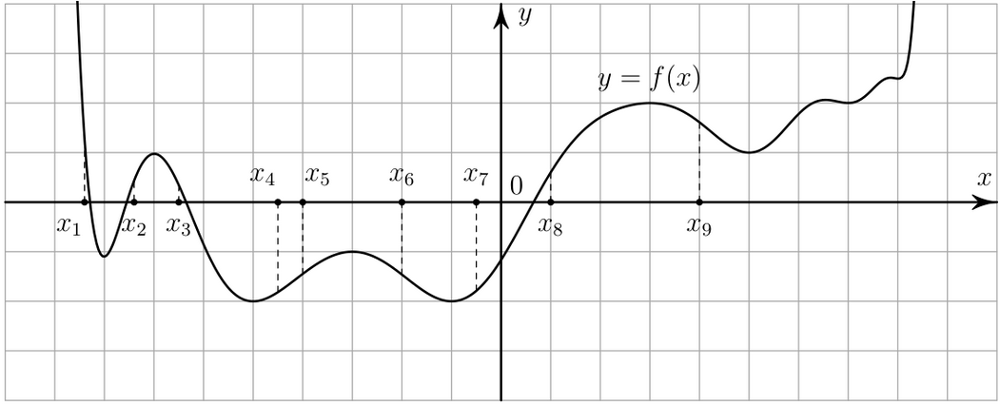
-
8.2
На рисунке изображены график функции $y = f(x)$ и касательная к нему в точке с абсциссой $x_0$. Найдите значение производной функции $f(x)$ в точке $x_0$.
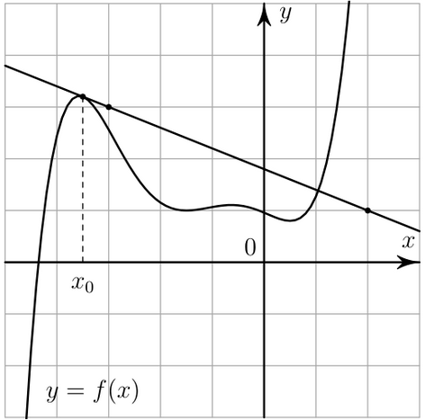
-
8.3
На рисунке изображен график функции $y = f(x)$, определённой на интервале $(-10; 3)$. Найдите количество корней уравнения $f'(x) = 0$, принадлежащих отрезку $[-7; 2]$.
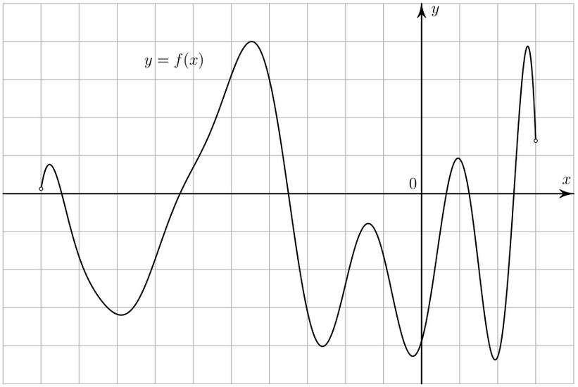
-
8.4
На рисунке изображен график функции $y = f(x)$, определенной на интервале $(-5; 4)$. Найдите корень уравнения $f'(x) = 0$.
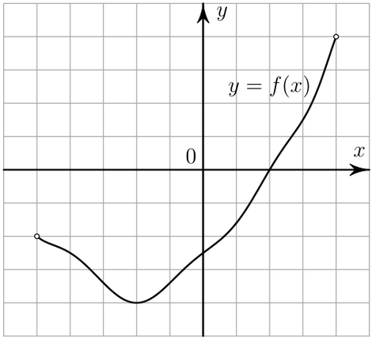
-
8.5
На рисунке изображен график функции $y = f(x)$. На оси абсцисс отмечены точки: 1, 2, 3, 4. В какой из этих точек значение производной наибольшее? В ответе укажите эту точку.
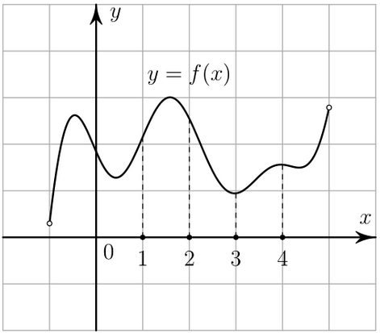
-
8.6
На рисунке изображен график функции $y = f'(x)$ — производной функции $f(x)$, определённой на интервале $(-12; 12)$. Найдите количество точек максимума функции $f(x)$, принадлежащих отрезку $[-6; 11]$.
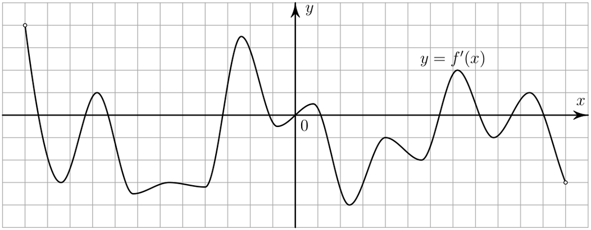
-
8.7
На рисунке изображен график функции $y = f'(x)$ — производной функции $f(x)$, определённой на интервале $(-9; 4)$. В какой точке отрезка $[-2; 3]$ функция $f(x)$ принимает наименьшее значение?
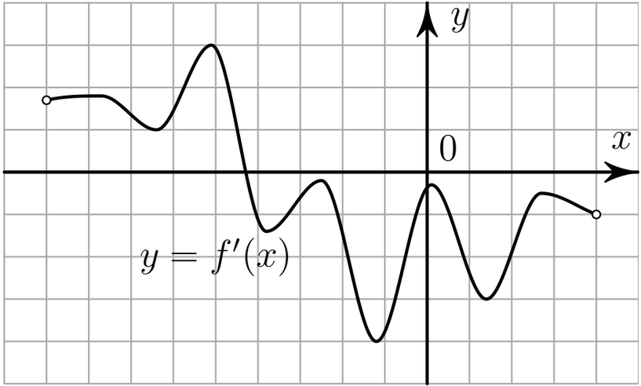
-
8.8
На рисунке изображен график функции $y = f'(x)$ — производной функции $f(x)$. На оси абсцисс отмечено десять точек: $x_1$, $x_2$, $x_3$, $x_4$, $x_5$, $x_6$, $x_7$, $x_8$, $x_9$, $x_{10}$. Сколько из этих точек принадлежит промежуткам возрастания функции $f(x)$?
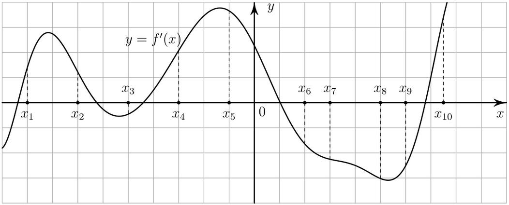
-
8.9
На рисунке изображен график функции $y = f'(x)$ — производной функции $f(x)$, определённой на интервале $(-4; 8)$. Найдите точку экстремума функции $f(x)$, принадлежащую отрезку $[1; 6]$.
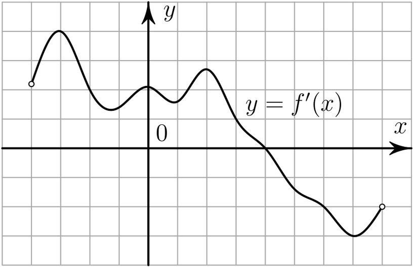
- 9.1 Сила тока $I$ (в $A$) в электросети вычисляется по закону Ома: $I = \frac{U}{R}$, где $U$ — напряжение электросети (в В), $R$ — сопротивление подключаемого электроприбора (в Ом). Электросеть прекращает работать, если сила тока превышает $5$ А. Определите, какое наименьшее сопротивление может быть у электроприбора, подключаемого к электросети с напряжением $220$ В, чтобы электросеть продолжала работать. Ответ дайте в омах.
- 9.2 В розетку электросети подключена электрическая духовка, сопротивление которой составляет $R_1 = 36$ Ом. Параллельно с ней в розетку предполагается подключить электрообогреватель, сопротивление которого $R_2$ (в Ом). При параллельном соединении двух электроприборов с сопротивлениями $R_1$ и $R_2$ их общее сопротивление $R$ вычисляется по формуле $R = \frac{R_1R_2}{R_1 + R_2}$. Для нормального функционирования электросети общее сопротивление в ней должно быть не меньше $20$ Ом. Определите наименьшее возможное сопротивление электрообогревателя. Ответ дайте в омах.
- 9.3 К источнику с ЭДС $\varepsilon = 180$ В и внутренним сопротивлением $r = 1$ Ом хотят подключить нагрузку с сопротивлением $R$ (в Ом). Напряжение (в В) на этой нагрузке вычисляется по формуле $U = \frac{\varepsilon R}{R + r}$. При каком значении сопротивления нагрузки напряжение на ней будет равно $170$ В? Ответ дайте в омах.
- 9.4 Перед отправкой тепловоз издал гудок с частотой $f_0 = 295$ Гц. Чуть позже гудок издал подъезжающий к платформе тепловоз. Из-за эффекта Доплера частота второго гудка $f$ (в Гц) больше первого: она зависит от скорости тепловоза $v$ (в м/с) по закону $f = \frac{f_0}{1 - \frac{v}{c}}$, где $c$ — скорость звука (в м/с). Человек, стоящий на платформе, различает сигналы по тону, если они отличаются не менее чем на $5$ Гц. Определите, с какой минимальной скоростью приближался к платформе тепловоз, если человек смог различить сигналы, а $c = 300$ м/с. Ответ дайте в м/с.
- 9.5 Локатор батискафа, равномерно погружающегося вертикально вниз, испускает ультразвуковые импульсы частотой 299 МГц. Скорость погружения батискафа $v$ (в м/с) вычисляется по формуле $v = c \cdot \frac{f - f_0}{f + f_0}$, где $c = 1500$ м/с — скорость звука в воде, $f_0$ — частота испускаемых импульсов (в МГц), $f$ — частота отражённого от дна сигнала (в МГц), регистрируемая приёмником. Определите частоту отражённого сигнала, если скорость погружения батискафа равна $5$ м/с. Ответ дайте в МГц.
- 9.6 При сближении источника и приёмника звуковых сигналов, движущихся в некоторой среде по прямой навстречу друг другу со скоростями $u$ и $v$ (в м/с) соответственно, частота звукового сигнала $f$ (в Гц), регистрируемого приёмником, вычисляется по формуле $f = f_0 \cdot \frac{c + u}{c - v}$, где $f_0 = 160$ Гц — частота исходного сигнала, $c$ — скорость распространения сигнала в среде (в м/с), а $u = 8$ м/с и $v = 11$ м/с — скорости источника и приёмника относительно среды. При какой скорости распространения сигнала в среде частота сигнала в приёмнике будет равна $170$ Гц? Ответ дайте в м/с.
- 9.7 Для получения на экране увеличенного изображения лампочки в лаборатории используется собирающая линза с фокусным расстоянием $f = 30$ см. Расстояние $d_1$ от линзы до лампочки может изменяться в пределах от $20$ см до $40$ см, а расстояние $d_2$ от линзы до экрана — в пределах от $160$ см до $180$ см. Изображение на экране будет чётким, если выполнено соотношение $\frac{1}{d_1} + \frac{1}{d_2} = \frac{1}{f}$. На каком наименьшем расстоянии от линзы нужно разместить лампочку, чтобы её изображение на экране было чётким? Ответ дайте в сантиметрах.
- 9.8 Автомобиль, движущийся со скоростью $v_0 = 24$ м/с, начал торможение с постоянным ускорением $a = 3$ м/с$^2$. За $t$ секунд после начала торможения он прошёл путь (в м) $s = v_0t - \frac{at^2}{2}$. Определите время, прошедшее с момента начала торможения, если известно, что за это время автомобиль проехал $90$ метров. Ответ дайте в секундах.
- 9.9 В боковой стенке высокого цилиндрического бака у самого дна закреплён кран. После его открытия вода начинает вытекать из бака, при этом высота столба воды в нём меняется по закону $H = H_0 + bt + at^2$, где $H$ — высота столба воды в метрах, $H_0 = 8$ м — начальный уровень воды, $a = \frac{1}{72}$ м/мин$^2$ и $b = -\frac{2}{3}$ м/мин — постоянные, $t$ — время в минутах, прошедшее с момента открытия крана. Сколько минут вода будет вытекать из бака?
- 9.10 Мотоциклист, движущийся по городу со скоростью $v_0 = 90$ км/ч, выезжает из него и сразу после выезда начинает разгоняться с постоянным ускорением $a = 16$ км/ч$^2$. Расстояние (в км) от мотоциклиста до города вычисляется по формуле $s = v_0t + \frac{at^2}{2}$, где $t$ — время в часах, прошедшее после выезда из города. Определите время, прошедшее после выезда мотоциклиста из города, если известно, что за это время он удалился от города на $72$ км. Ответ дайте в минутах.
- 9.11 Для сматывания кабеля на заводе используют лебёдку, которая равноускоренно наматывает кабель на катушку. Угол, на который поворачивается катушка, изменяется со временем по закону $\phi = \omega t + \frac{\beta t^2}{2}$, где $t$ — время в минутах, прошедшее после начала работы лебёдки, $\omega = 15$ град/мин — начальная угловая скорость вращения катушки, а $\beta = 6$ град/мин$^2$ — угловое ускорение, с которым наматывается кабель. Определите время, прошедшее после начала работы лебёдки, если известно, что за это время угол намотки $\phi$ достиг $2250^\circ$. Ответ дайте в минутах.
- 9.12 Высота над землёй подброшенного вверх мяча меняется по закону $h = 1{,}6 + 13t - 5t^2$, где $h$ — высота в метрах, $t$ — время в секундах, прошедшее с момента броска. Сколько секунд мяч будет находиться на высоте не менее $6$ метров?
- 9.13 Для нагревательного элемента некоторого прибора экспериментально была получена зависимость температуры (в К) от времени работы: $T = T_0 + bt + at^2$, где $t$ — время (в мин.), $T_0 = 1600$ К, $a = -5$ К/мин$^2$, $b = 105$ К/мин. Известно, что при температуре нагревательного элемента свыше $1870$ К прибор может испортиться, поэтому его нужно отключить. Найдите, через какое наибольшее время после начала работы нужно отключить прибор. Ответ дайте в минутах.
- 9.14 Автомобиль разгоняется на прямолинейном участке шоссе с постоянным ускорением $a$ (км/ч$^2$). Скорость $v$ (в км/ч) вычисляется по формуле $v = \sqrt{2la}$, где $l$ — пройденный автомобилем путь (в км). Найдите ускорение, с которым должен двигаться автомобиль, чтобы, проехав $0{,}5$ км, приобрести скорость $70$ км/ч. Ответ дайте в км/ч$^2$.
- 9.15 Автомобиль разгоняется на прямолинейном участке шоссе с постоянным ускорением $a = 3500$ км/ч$^2$. Скорость $v$ (в км/ч) вычисляется по формуле $v = \sqrt{2la}$, где $l$ — пройденный автомобилем путь (в км). Найдите, сколько километров проедет автомобиль к моменту, когда он разгонится до скорости $70$ км/ч.
- 9.16 Расстояние от наблюдателя, находящегося на небольшой высоте $h$ (в километрах) над землёй, до наблюдаемой им линии горизонта вычисляется по формуле $l = \sqrt{2Rh}$, где $R = 6400$ км — радиус Земли. С какой высоты горизонт виден на расстоянии $48$ километров? Ответ дайте в километрах.
- 9.17 Для определения эффективной температуры звёзд используют закон Стефана-Больцмана, согласно которому $P = \sigma ST^4$, где $P$ — мощность излучения звезды (в Вт), $\sigma = 5{,}7 \cdot 10^{-8}$ Вт/м$^2\cdot$К$^4$ — постоянная, $S$ — площадь поверхности звезды (в м$^2$), а $T$ — температура (в кельвинах). Известно, что площадь поверхности некоторой звезды равна $\frac{1}{2401}\cdot 10^{22}$ м$^2$, а мощность ее излучения равна $5{,}7 \cdot 10^{26}$ Вт. Найдите температуру этой звезды. Ответ дайте в кельвинах.
- 9.18 При адиабатическом процессе для идеального газа выполняется закон $pV^k = c$, где $p$ — давление в газе в паскалях, $V$ — объём газа в м$^3$, $k = \frac{5}{3}$ и $c = 6{,}4 \cdot 10^6$ Па$\cdot$м$^5$ — постоянные. Найдите, какой объём $V$ (в м$^3$) будет занимать газ при давлении $p$, равном $2 \cdot 10^5$ Па.
- 9.19 Два тела, массой $m = 6$ кг каждое, движутся одинаковой скоростью $v = 9$ м/с под углом $2\alpha$ друг к другу. Энергия (в Дж), выделяющаяся при их абсолютно неупругом соударении, вычисляется по формуле $Q = mv^2 \sin^2 \alpha$, где $m$ — масса (в кг), $v$ — скорость (в м/с). Найдите, под каким углом $2\alpha$ должны двигаться тела, чтобы в результате соударения выделилась энергия, равная $243$ Дж. Ответ дайте в градусах.
- 9.20 В ходе распада радиоактивного изотопа его масса $m$ (в мг) уменьшается по закону $m = m_0 \cdot 2^{-\tau/T}$, где $m_0$ — начальная масса изотопа (в мг), $\tau$ — время, прошедшее от начального момента (в мин), $T$ — период полураспада (в мин). В начальный момент времени масса изотопа 156 мг. Период его полураспада составляет 8 минут. Найдите, через сколько минут масса изотопа будет равна 39 мг.
- 9.21 Водолазный колокол, содержащий $\nu = 3$ моль воздуха при давлении $p_1 = 1{,}4$ атмосферы, медленно опускают на дно водоёма. При этом происходит изотермическое сжатие воздуха до конечного давления $p_2$ (в атмосферах). Работа $A$ (в Дж), совершаемая водой при сжатии воздуха, вычисляется по формуле $A = \alpha \nu T \log_2 \frac{p_2}{p_1}$, где $\alpha = 10{,}9$ Дж/(моль$\cdot$К) — постоянная, $T = 300$ К — температура воздуха. Найдите давление $p_2$ воздуха в колоколе, если при сжатии воздуха была совершена работа $29\,430$ Дж. Ответ дайте в атмосферах.
- 9.22 Водолазный колокол, содержащий $\nu = 2$ моль воздуха объёмом $V_1 = 120$ л, медленно опускают на дно водоёма. При этом происходит изотермическое сжатие воздуха до конечного объёма $V_2$ (в л). Работа $A$ (в Дж), совершаемая водой при сжатии воздуха, вычисляется по формуле $A = \alpha \nu T \log_2 \frac{V_1}{V_2}$, где $\alpha = 8{,}7$ Дж/(моль$\cdot$К), $T = 300$ К — температура воздуха. Найдите, какой объем $V_2$ будет занимать воздух в колоколе, если при сжатии воздуха была совершена работа $10\,440$ Дж. Ответ дайте в литрах.
- 10.1 Призёрами городской олимпиады по математике стали 6 учеников, что составило 5% от числа участников. Сколько человек участвовало в олимпиаде?
- 10.2 Имеется два сплава. Первый сплав содержит 45% меди, второй — 20% меди. Масса первого сплава больше массы второго на 30 кг. Из этих двух сплавов получили третий сплав, содержащий 40% меди. Найдите массу третьего сплава. Ответ дайте в килограммах.
- 10.3 Имеются два сосуда. Первый содержит 40 кг, а второй — 25 кг растворов кислоты различной концентрации. Если эти растворы смешать, то получится раствор, содержащий 30% кислоты. Если же смешать равные массы этих растворов, то получится раствор, содержащий 36% кислоты. Сколько процентов кислоты содержится в первом сосуде?
- 10.4 Смешав 45%-й и 97%-й растворы кислоты и добавив 10 кг чистой воды, получили 62%-й раствор кислоты. Если бы вместо 10 кг воды добавили 10 кг 50%-го раствора той же кислоты, то получили бы 72%-й раствор кислоты. Сколько килограммов 45%-го раствора использовали для получения смеси?
- 10.5 Первый час автомобиль ехал со скоростью 115 км/ч, следующие три часа — со скоростью 45 км/ч, а затем два часа — со скоростью 40 км/ч. Найдите среднюю скорость автомобиля на протяжении всего пути. Ответ дайте в км/ч.
- 10.6 Первые 120 км автомобиль ехал со скоростью 60 км/ч, следующие 200 км — со скоростью 100 км/ч, а затем 160 км — со скоростью 120 км/ч. Найдите среднюю скорость автомобиля на протяжении всего пути. Ответ дайте в км/ч.
- 10.7 Два велосипедиста одновременно отправились в 80-километровый пробег. Первый ехал со скоростью, на 2 км/ч большей, чем скорость второго, и прибыл к финишу на 2 часа раньше второго. Найдите скорость велосипедиста, пришедшего к финишу вторым. Ответ дайте в км/ч.
- 10.8 По двум параллельным железнодорожным путям навстречу друг другу следуют скорый и пассажирский поезда, скорости которых равны соответственно 85 км/ч и 35 км/ч. Длина пассажирского поезда равна 250 метрам. Найдите длину скорого поезда, если время, за которое он прошёл мимо пассажирского, равно 30 секундам. Ответ дайте в метрах.
- 10.9 Расстояние между городами $A$ и $B$ равно 500 км. Из города $A$ в город $B$ выехал первый автомобиль, а через час после этого навстречу ему из города $B$ выехал со скоростью 80 км/ч второй автомобиль. Найдите скорость первого автомобиля, если автомобили встретились на расстоянии 260 км от города $A$. Ответ дайте в км/ч.
- 10.10 Один мастер может выполнить заказ за 40 часов, а другой — за 24 часа. За сколько часов выполнят этот заказ оба мастера, работая вместе?
- 10.11 Заказ на изготовление 198 деталей первый рабочий выполняет на 7 часов быстрее, чем второй. Сколько деталей за час изготавливает первый рабочий, если известно, что он за час изготавливает на 7 деталей больше второго?
- 10.12 Первая труба пропускает на 5 литров воды в минуту меньше, чем вторая. Сколько литров воды в минуту пропускает первая труба, если резервуар объёмом 104 литра она заполняет на 5 минут дольше, чем вторая труба?
- 10.13 Первый насос наполняет бак за 11 минут, второй — за 15 минут, а третий — за 1 час 50 минут. За сколько минут наполнят этот бак три насоса, работая одновременно?
- 10.14 Катя и Настя, работая вместе, пропалывают грядку за 24 минуты, а одна Настя — за 42 минуты. За сколько минут пропалывает грядку одна Катя?
- 10.15 Теплоход проходит по течению реки до пункта назначения 80 км и после стоянки возвращается в пункт отправления. Найдите скорость теплохода в неподвижной воде, если скорость течения равна 2 км/ч, стоянка длится 4 часа, а в пункт отправления теплоход возвращается через 13 часов. Ответ дайте в км/ч.
- 10.16 Теплоход проходит по течению реки до пункта назначения 468 км и после стоянки возвращается в пункт отправления. Найдите скорость течения, если скорость теплохода в неподвижной воде равна 22 км/ч, стоянка длится 3 часа, а в пункт отправления теплоход возвращается через 47 часов. Ответ дайте в км/ч.
- 10.17 Теплоход, скорость которого в неподвижной воде равна 27 км/ч, проходит некоторое расстояние по реке и после стоянки возвращается в исходный пункт. Скорость течения равна 1 км/ч, стоянка длится 5 часов, а в исходный пункт теплоход возвращается через 32 часа после отправления из него. Сколько километров проходит теплоход за весь рейс?
- 10.18 От пристани $A$ к пристани $B$, расстояние между которыми равно 323 км, отправился с постоянной скоростью первый теплоход, а через 2 часа после этого следом за ним со скоростью, на 2 км/ч большей скорости первого, отправился второй. Найдите скорость второго теплохода, если в пункт $B$ он прибыл одновременно с первым. Ответ дайте в км/ч.
- 10.19 Пристани $A$ и $B$ расположены на озере, расстояние между ними равно 264 км. Баржа отправилась с постоянной скоростью из $A$ в $B$. На следующий день после прибытия она отправилась тем же путём обратно со скоростью на 2 км/ч больше прежней, сделав по пути остановку на 1 час. В результате она затратила на обратный путь столько же времени, сколько на путь из $A$ в $B$. Найдите скорость баржи на пути из $A$ в $B$. Ответ дайте в км/ч.
- 10.20 Расстояние между пристанями $A$ и $B$ равно 192 км. Из $A$ в $B$ по течению реки отправился плот, а через 3 часа вслед за ним отправилась яхта, которая, прибыв в пункт $B$, тотчас повернула обратно и возвратилась в $A$. К этому времени плот проплыл 92 км. Найдите скорость яхты в неподвижной воде, если скорость течения реки равна 4 км/ч. Ответ дайте в км/ч.
- 10.21 Моторная лодка прошла против течения реки 117 км и вернулась в пункт отправления, затратив на обратный путь на 4 часа меньше. Найдите скорость лодки в неподвижной воде, если скорость течения равна 2 км/ч. Ответ дайте в км/ч.
- 10.22 Моторная лодка прошла против течения реки 48 км и вернулась в пункт отправления, затратив на обратный путь на 8 часов меньше. Найдите скорость течения, если скорость лодки в неподвижной воде равна 8 км/ч. Ответ дайте в км/ч.
- 10.23 Катер в 10:00 вышел по течению реки из пункта $A$ в пункт $B$, расположенный в 35 км от $A$. Пробыв в пункте $B$ 4 часа, катер отправился назад и вернулся в пункт $A$ в 18:00 того же дня. Определите собственную скорость катера (в км/ч), если известно, что скорость течения реки 3 км/ч.
-
11.1
На рисунке изображён график функции вида $f(x) = kx + b$. Найдите значение $f(7)$.
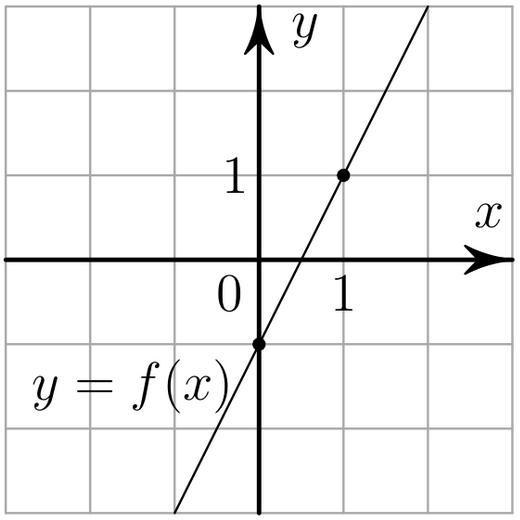
-
11.2
На рисунке изображены графики двух линейных функций, пересекающиеся в точке $A$. Найдите абсциссу точки $A$.
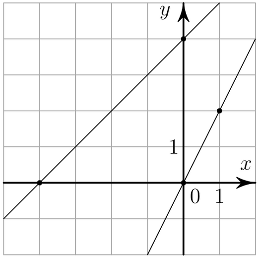
-
11.3
На рисунке изображён график функции вида $f(x) = ax^2 + bx + c$. Найдите значение $f(-3)$.
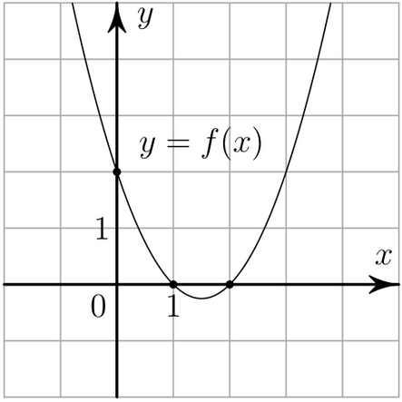
-
11.4
На рисунке изображены графики функций видов $f(x) = ax^2 + bx + c$ и $g(x) = kx$, пересекающихся в точках $A$ и $B$. Найдите абсциссу точки $B$.
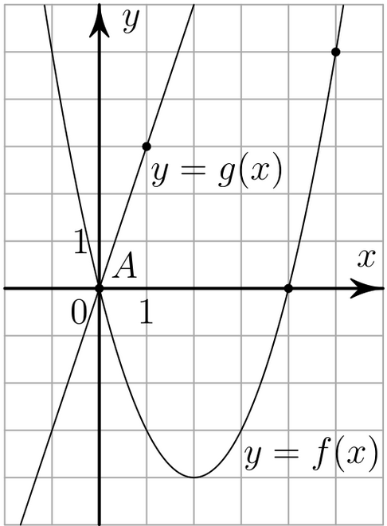
-
11.5
На рисунке изображён график функции вида $f(x) = \frac{k}{x}$. Найдите значение $f(30)$.
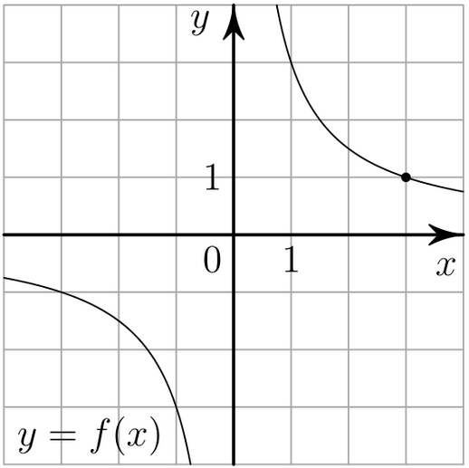
-
11.6
На рисунке изображены графики функций видов $f(x) = \frac{k}{x}$ и $g(x) = ax + b$, пересекающихся в точках $A$ и $B$. Найдите абсциссу точки $B$.
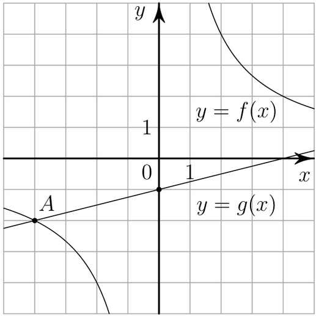
-
11.7
На рисунке изображены графики функций видов $f(x) = a\sqrt{x}$ и $g(x) = kx$, пересекающихся в точках $A$ и $B$. Найдите абсциссу точки $B$.
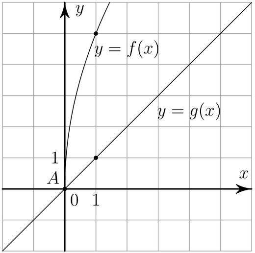
-
11.8
На рисунке изображён график функции вида $f(x) = a^x$. Найдите значение $f(5)$.
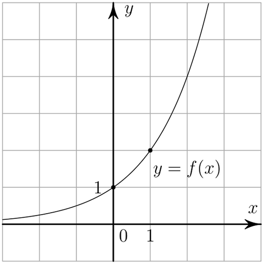
-
11.9
На рисунке изображён график функции вида $f(x) = \log_a x$. Найдите значение $f(8)$.
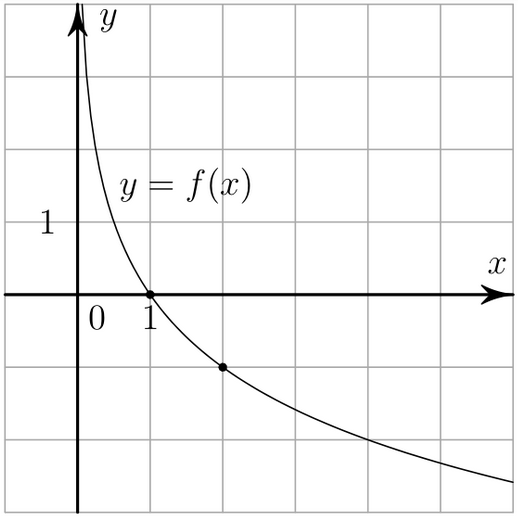
- 12.1 Найдите точку максимума функции $y = x^3 + 27x^2 + 11$.
- 12.2 Найдите точку минимума функции $y = x^3 - 300x + 14$.
- 12.3 Найдите точку минимума функции $y = x^3 - 14x^2 + 49x + 3$.
- 12.4 Найдите точку минимума функции $y = \frac{x^3}{2} - 3x + 9$.
- 12.5 Найдите точку минимума функции $y = x\sqrt{x} - 3x + 17$.
- 12.6 Найдите наименьшее значение функции $y = x\sqrt{x} - 9x + 25$ на отрезке $[1; 50]$.
- 12.7 Найдите точку минимума функции $y = -\frac{x}{x^2 + 256}$.
- 12.8 Найдите точку минимума функции $y = x^2 - 28x + 96 \cdot \ln x + 31$.
- 12.9 Найдите точку максимума функции $y = 9 \cdot \ln(x - 4) - 9x - 7$.
- 12.10 Найдите наибольшее значение функции $y = 9 \ln(x + 7) - 9x + 4$ на отрезке $[-6{,}5; 0]$.
- 12.11 Найдите точку минимума функции $y = 5x - \ln(x + 3)^5 + 6$.
- 12.12 Найдите наименьшее значение функции $y = 9x - \ln(x + 5)^9$ на отрезке $[-4{,}5; 0]$.
- 12.13 Найдите наименьшее значение функции $y = 12x - \ln(12x) + 4$ на отрезке $[\frac{1}{24}; \frac{5}{24}]$.
- 12.14 Найдите точку минимума функции $y = (x + 5) \cdot e^{x - 5}$.
- 12.15 Найдите точку максимума функции $y = (x + 8)^2 \cdot e^{3 - x}$.
- 12.16 Найдите точку максимума функции $y = (x + 3) \cdot e^{3 - x}$.
- 12.17 Найдите наименьшее значение функции $y = 3 \cos x - 5x + 5$ на отрезке $[-\frac{3\pi}{2}; 0]$.
- 12.18 Найдите наименьшее значение функции $y = 10 \cos x + \frac{36x}{\pi} - 6$ на отрезке $[-\frac{2\pi}{3}; 0]$.
- 12.19 Найдите наибольшее значение функции $y = 10 \sin x - \frac{36x}{\pi} + 7$ на отрезке $[-\frac{5\pi}{6}; 0]$.